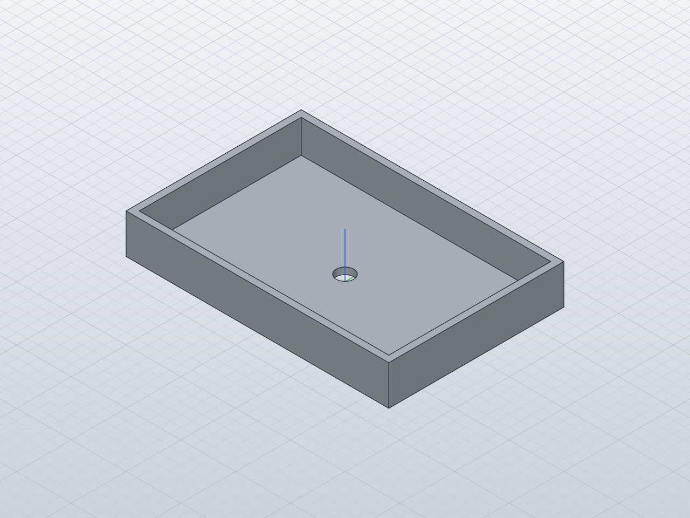

3D・CAD の作例
寸法を4つ変えても、穴は中央、壁は3 mmのまま
- 寸法を決める幅・奥行・高さ・穴径に名前を付ける
- CADで計算し直す名前の値を変えて形を作り直さずに更新
- 実測する体積・外形・重心を解析値と比べる
- 保存する編集できる設計・STEP・STL
架空の工房「よりみちラボ」の小物トレーを SolidCraft 0.11.1 で作り、4つの寸法を一度に変えました。下の画像と数値は、そのとき保存した2つの状態です。
このページではCADを動かしません。保存した結果を切り替えて見るだけです。AIの実行や、寸法を入れて計算し直す機能はありません。
保存した2つの状態

入力：架空の依頼
作例のために書いた依頼文です。工房も用途も架空です。この文から、作るためのコマンド cad/build.json と変更用の cad/resize.json を書きました。
架空の小さな工房「よりみちラボ」で、ねじやワッシャーを分けて置く小物トレーを作りたい。水をためないための丸い貫通穴を底の中央に1つ付ける。 初期寸法は幅120 mm、奥行80 mm、高さ18 mm、底の穴径8 mm。壁と底は3 mmに固定し、上は開ける。幅・奥行・高さ・穴径を名前付きパラメーターにし、幅150 mm、奥行90 mm、高さ24 mm、穴径12 mmへ一度変更しても、中央の穴と3 mmの壁・底が追従するようにする。 確認範囲は幅120〜150 mm、奥行80〜90 mm、高さ18〜24 mm、穴径8〜12 mm。使える範囲をコメントへ書き、範囲端と初期値へ戻したときの形状を確かめる。外観の飾りやフィレットは必須ではない。 編集できる設計、再現用コマンドJSON、STEP、STL、実際の等角・上面画像、入力と実測値の記録を残す。製造強度や3Dプリントの品質まで保証したとは書かない。
変更前と変更後
| パラメーター | 初期 | 変更後 | 使える範囲 |
|---|---|---|---|
幅width | 120 mm | 150 mm | 120〜150 mm |
奥行depth | 80 mm | 90 mm | 80〜90 mm |
高さheight | 18 mm | 24 mm | 18〜24 mm |
穴径hole_diameter | 8 mm | 12 mm | 8〜12 mm |
壁wall | 3 mm | 3 mm | 固定 |
底floor_thickness | 3 mm | 3 mm | 固定 |
変更は、保存した初期の設計へ parameters.change を4つまとめて1回送っただけで、形は作り直していません。穴の軸は x = y = 0、くぼみの内寸は width - 2 * wall のような式なので、寸法を変えても穴は中央に残り、壁と底は3 mmのままです。範囲は SolidCraft が強制しないため、各パラメーターのコメントに書いています。
確かめたこと
- ボディは1つ2つの状態とも
body_countは1。保存した .json・STEP・STL を SolidCraft 0.11.1 で開き直しても1つでした。 - タイムラインに error・warning なしTrayBlock・Pocket・DrainHole の3つとも
nullです。 - 外形・体積・重心が解析値の許容差の中外接箱は差0。体積と表面積は相対 2×10-4、重心と外接箱は 0.022 mm（変更後は 0.026 mm）を、実行の前に許容差として決めました。保存した2つの状態で差が最も大きかったのは、変更後の体積の 0.00008 % です。
- 上面の画像で穴の位置実際の上面画像の線を調べ、穴の中心と外形の中心が1ピクセル以内、穴径と壁の厚さの誤差が0.3 mm未満でした。
- 範囲の端だけを往復
walk.jsonで、初期値から寸法を1つずつ上の端へ動かして戻し、最後に4つ同時に動かして戻しました。11状態で11合格です。範囲の途中の値やほかの組み合わせは試していません。
確かめていないこと
- 製造、強度、耐荷重、3Dプリントの品質、水はけは確かめていません。
- 画像はAIの制作工程が見て確かめたもので、人による承認ではありません。
- STLは三角形に分けた形のため、体積が解析値と少しずれます（初期で約0.7 mm³）。寸法の式は STEP と STL には残らず、編集できるのは .json です。
SolidCraft のスキルの使い方
SolidCraft に同梱された3つのエージェント向けスキルを読み、次のように当てはめました。原文は vendor/solidcraft/skills/ にあります。
- solidcraft-modeling新しい部品を作る
- 寸法と体積・外接箱の期待値を先に計算し、部品を原点の中心に置きました。外形・くぼみ・穴の3段に分けて送り、段ごとに
measureの値を自分の計算と比べています。穴は対称の中心にあり重心では位置が分からないため、上面の画像でも確かめました。 - solidcraft-editing既存の設計を変える
- 作り直さず、4つの
parameters.changeを1回にまとめ、合計の予測と1回の測定で照合しました。変更のあとにタイムラインの error と warning が空であることも確かめています。 - solidcraft-checkingSolidCraft が報告しない誤りを調べる
- 範囲をコメントに書き、4つの寸法をお気に入りにしました。
floorは式の関数名なので底の厚さはfloor_thicknessにし、穴を開ける円柱は面より1 mm先から始めて Boolean の再試行を避けています。範囲の端を往復するwalk.jsonを、原典のrun.pyと、テンプレートを元にしたcheck_design.pyの両方で実行しました。
ファイル


作り方と記録
- cad/build.json空の状態から作るコマンド
- cad/resize.json4つの寸法を変えるコマンド
- cad/walk.json範囲の端を往復するコマンド
- cad/expected.json解析式と期待値
- cad/check_design.py期待値と照合するチェッカー
- cad/plan.md実行の前に書いた計画書（数値は予測値）
- measurements.json実測値と確認結果の記録
- samples.json入力と結果の組
出典とライセンス
- この作例の再現手順（README.md）
- SolidCraft のソース（参照コミット 16c49c3）スキルと文書を読んだ版
- SolidCraft 0.11.1 の公式リリース（コミット b01b968）実行に使った版。参照コミットとは別に固定しています
- SolidCraft README（参照コミットから同梱）
- SolidCraft の MCP の説明（docs/mcp.md）
- LICENSE-APACHE・LICENSE-MIT・NOTICE
- この作例の LICENSE（MIT）
この作例の文章・画面・依頼文・CADのコマンドと設計・書き出したファイルと画像・動画のソースは 八百万図AIツールボックス の独自制作で、MIT License です。vendor/solidcraft/ は上流の SolidCraft のファイルを変更せずに置いたもので、上流は MIT OR Apache-2.0 のどちらかを選べます。この作例では Apache-2.0 を選んで再配布し、NOTICE も同梱しています。SolidCraft の本体は同梱していません。